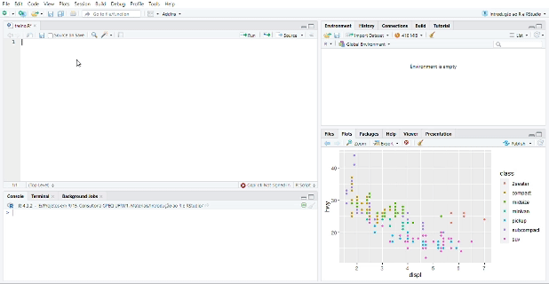

1 + 1[1] 2Como vimos nos capítulos anteriores, o papel do Console no R é interpretar os nossos comandos à luz da linguagem. Ele avalia o código que o passamos e devolve a saída correspondente — se tudo der certo — ou uma mensagem de erro — se o seu código tiver algum problema. Essa operação é chamada de avaliar, executar ou rodar o código. Para que seu código seja executado diretamente no Console, escreva-o e, na sequência, aperte Enter. A outra forma de executar uma expressão é escrever o código em um script no Editor, deixar o cursor em cima da linha e usar o atalho Ctrl + Enter. Assim, o comando é enviado para o Console, onde é diretamente executado.
Nesse capítulo, você rodará suas primeiras linhas de código com intuito de realizar operações aritméticas como adição, subtração, multiplicação e divisão, além de comparações lógicas simples. O objetivo aqui não é te ensinar matemática básica, mas te preparar para a execução de linhas de código mais avançadas. É a forma mais fácil de um iniciante ganhar familiaridade e experiência prática com o R.
De agora em diante, cada região sombreada de cinza representa código, ao passo que seu resultado estará exposto logo na sequência. Vamos começar com um exemplo simples:
1 + 1[1] 2Nesse caso, o nosso comando foi o código 1 + 1 e a saída foi o valor 2. Como você pode reproduzir esse comando no RStudio? Inicialmente, copie o que está escrito acima ao clicar no símbolo de prancheta no canto superior direito da região sombreada. Na sequência, cole no Editor de Código e aperte Ctrl + Enter (ou então no Console, pressionando apenas Enter). Observe abaixo!

Tente agora jogar no Console a expressão: 2 * 2 - (4 + 4) / 2. Deu zero? Pronto! Você já é capaz de pedir ao R para fazer qualquer uma das quatro operações aritméticas básicas. Repare que as operações e suas precedências são mantidas como na matemática, ou seja, divisão e multiplicação são calculadas antes da adição e subtração, além de os parênteses ditarem a ordem na qual serão realizadas. A seguir, apresentamos a Tabela tbl-ope-mat resumindo como fazer as principais operações no R.
| Operação | Operador | Exemplo | Resultado |
|---|---|---|---|
| Adição | + | 1 + 1 | 2.00 |
| Subtração | - | 4 - 2 | 2.00 |
| Multiplicação | * | 2 * 3 | 6.00 |
| Divisão | / | 5 / 3 | 1.67 |
| Potenciação | ^ | 4 ^ 2 | 16.00 |
| Resto da Divisão | %% | 5 %% 3 | 2.00 |
| Parte Inteira da Divisão | %/% | 5 %/% 3 | 1.00 |
O R permite também testar comparações lógicas. Os valores lógicos básicos em R são TRUE (ou apenas T) e FALSE (ou apenas F). Por exemplo, podemos pedir ao R que nos diga se é verdadeiro que 5 é menor do que 3. Como a resposta é obviamente negativa, ele retornará FALSE, nos dizendo que a proposição que fizemos é falsa.
5 < 3[1] FALSEAbaixo, introduzimos a Tabela tbl-ope-log com outros operadores lógicos da linguagem.
| Operação | Operador | Exemplo | Resultado |
|---|---|---|---|
| Maior que | > | 2 > 1 | TRUE |
| Maior ou igual que | >= | 2 >= 2 | TRUE |
| Menor que | < | 2 < 3 | TRUE |
| Menor ou igual que | <= | 5 =< 3 | FALSE |
| Igual à | == | 4 == 4 | TRUE |
| Diferente de | != | 5 != 3 | TRUE |
| x e y | & | x <- c(1, 4, NA, 8) x[!is.na(x) & x > 5] |
8 |
| x ou y | | | x <- c(1, 4, NA, 8) x[!is.na(x) | x > 5] |
1, 4, 8 |
Se você digitar um comando incompleto, como 5 +, e apertar Enter, o R mostrará um +, o que não tem nada a ver com a adição da matemática. Isso significa que o R está esperando você enviar mais algum código para completar o seu comando. Termine o seu comando ou aperte Esc para recomeçar.
5 -
+
+ 5[1] 0Se você digitar um comando que o R não reconhece, ele retornará uma mensagem de erro. Não entre em pânico. Ele só está te avisando que não conseguiu interpretar o comando.
5 % 2Error: <text>:1:3: unexpected input
1: 5 % 2
^Você pode digitar outro comando normalmente em seguida.
5 ^ 2[1] 25